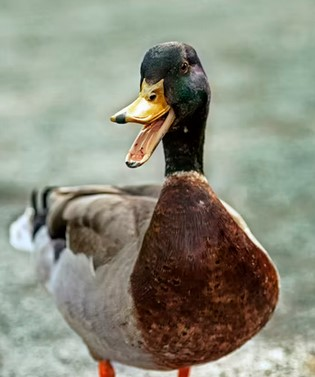

Kohustuslikus korras koostan siia tabeli, sisuks minu sünd ja hariduskäik.
Sünnipaik |
Põhiharidus |
Keskharidus |
Kõrgharidus |
|---|---|---|---|
| Kärdla, Hiiumaa | Käina kool, Hiiumaa | Tartu Tamme Gümnaasium, Tartu | Tallinna Tehnikaülikool, Tallinn |
| Haigla koduleht | Põhikooli koduleht | Gümnaasiumi koduleht | Ülikooli koduleht |
Tabel siis sai tehtud, ma tegelt kirjutan siia tühja teksti, et oleks ikka piisavalt tähemärke.
Lisan teile imetlemiseks siia ühe pardi:
Kehalt on pardid jässakad, lühikeste, lestadega varustatud ujujalgade ja lameda nokaga;
nad kuuluvad nn ujupartide rühma: toitumiseks ei sukeldu, vaid nopivad veepinnalt putukaid ja taimeosi või küünitavad noka põhjani.
Toiduga tulev vesi kurnatakse läbi nokaservade, mida äärestavad sarvliistakud, paks lihaseline keel talitleb pressina.
Pardid pesitsevad kaldataimestikus või veekogust eemal maapinnal, kurnas 5–12 muna;
tõusevad lendu maast või veest otse kohalt, ei vaja hoojooksu nagu sukelpardid.